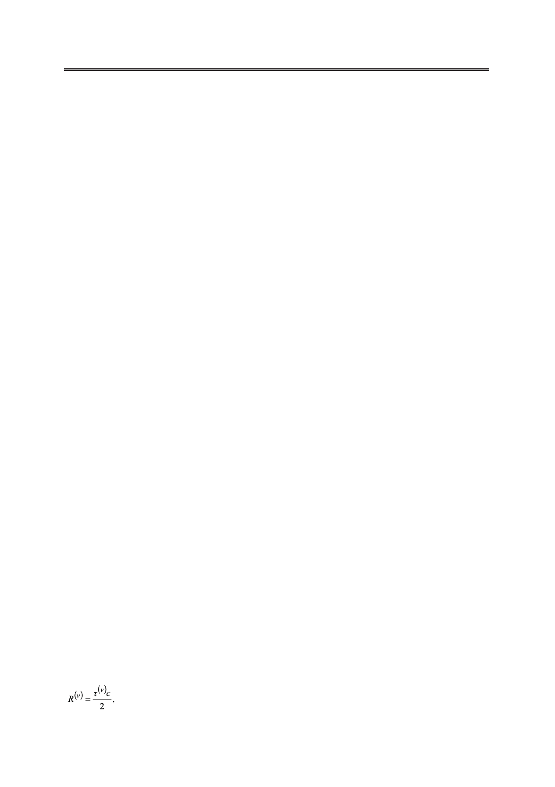

Линейная фильтрация выходных данных в охранной однопозиционной системе
A definition of estimation describes criteria for the quality of filtering process, parameters for
modeling the system and the results of the modeling. The suggested criteria for the quality of
filtering process include average, variance and standard deviation of filtering errors and interval
between the true and filtering values. Initial values for the modeling and the results of the
modeling are presented. In conclusion, the filtering improves with increasing spectral width of
probing signal and signal/noise ratio. However, Kalman filtering is most effective.
Keywords: linear filtering, Kalman filter, Wiener filter, α-β filter, estimating the quality of
filtering, security system.
Введение
Задачи получения оценок параметров радиосигналов и фильтрации выходных дан-
ных в радиолокационных системах являются одними из ключевых в радиотехнике.
Они формулируются следующим образом: по принятой реализации сигнала необходи-
мо определить значение параметра сигнала с минимальной погрешностью. Что касается
фильтрации наблюдаемых параметров, то эта проблема более общая и сложная: предпо-
лагается, что оцениваемый параметр наблюдения может меняться во времени, и он также
подлежит определению с минимальной погрешностью в течение заданного интервала
времени. В радиотехнике указанные задачи нередко дополняют друг друга, причем воз-
можно выбрать такие интервалы наблюдения, при которых измеряемый параметр счита-
ют постоянным, и на таких интервалах производят оценку параметра. Далее, объединяя
такие интервалы (траекторная обработка), используют различные методы фильтрации.
Существует множество подходов к реализации процедур оценки и фильтрации [1−4], од-
нако они дают выражения только в общем виде, а конкретных характеристик качества
фильтрации при заданном характере изменения измеряемых параметров и самой техни-
ческой системы − не дают. Таким образом, возникает задача оценки качества фильтрации
в некоторой конкретной радиолокационной системе при использовании различных типов
фильтрации.
В настоящей работе рассмотрена охранная однопозиционная система, которая по-
сылает сигнал до объекта наблюдения (ОН) и принимает эхосигнал. Соответственно,
принятый эхосигнал зависит от местоположения и характера движения ОН. В качестве
модели движения ОН предложена марковская последовательность.
1. Охранная однопозиционная система и объект наблюдения
Как уже отмечалось выше, охранная система представляет собой однопозиционную
радиосистему, которая в импульсном режиме облучает ОН и принимает эхосигнал. Она
изображена на рис. 1. Система измеряет временную задержку распространения импуль-
сного сигнала τ от охранной системы до объекта и пеленг β, которые, в свою очередь,
зависят от положения ОН в декартовой системе координат X и Y. Отсюда можно записать
следующие формулы связи между измеряемыми параметрами и координатами ОН при
приёме ν-го импульса:
(1)
14
Российский технологический журнал 2017 Том 5 № 5